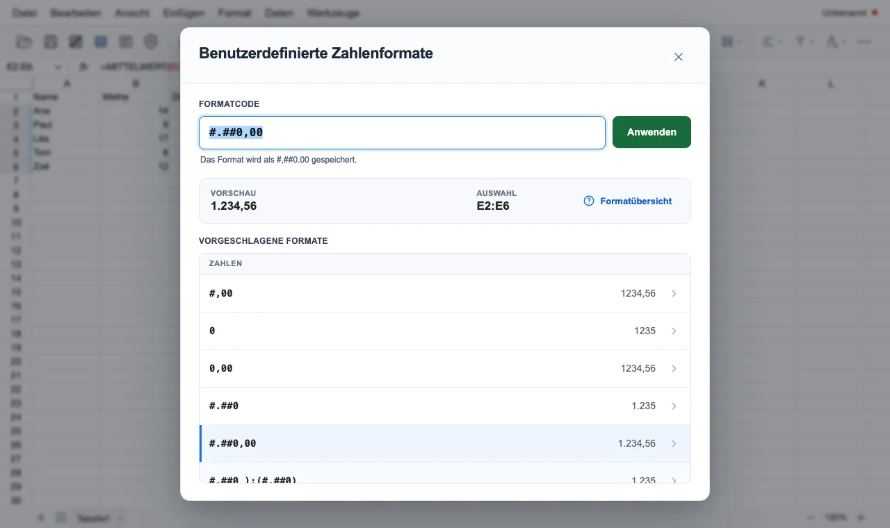

Zahlenformate
Ein Format ändert die Anzeige einer Zahl, nicht ihren Wert: Rechnungen behalten alle Dezimalstellen.
Ein Format wählen
Format › Zahl oder die Liste Automatisch der Symbolleiste.
| Format | Beispiel |
|---|---|
| Automatisch | 1200,09 |
| Nur Text | 1200,09, linksbündig; die Eingabe bleibt ein Text |
| Zahl | 1200,09 |
| Prozent | 120009,00%; 0,25 wird 25,00% |
| Wissenschaftlich | 1,20E+03 |
| Buchhaltung | (1.200,09) € |
| Währung | 1.200,09 € |
| Datum, Uhrzeit, Datum und Uhrzeit | für Daten: 29.11.2017, 3:00 PM, 15:00… |
Das Währungssymbol ist das der Sprache der Oberfläche.
| Schaltfläche | Wirkung |
|---|---|
| Prozent | |
| eine Dezimalstelle weniger | |
| eine Dezimalstelle mehr |
Diese Schaltflächen gelten auch für die Zahlen einer Liste. Um den Wert selbst zu runden, RUNDEN verwenden.
Benutzerdefiniertes Format
Format › Zahl › Benutzerdefiniertes Zahlenformat…: ein vorgeschlagenes Format wählen oder einen Code schreiben. Die Vorschau zeigt das Ergebnis; Formatübersicht erinnert an die Zeichen; Anwenden gibt es der Auswahl.

| Zeichen | Aufgabe | Code | 1234,5 wird angezeigt |
|---|---|---|---|
0 | eine Ziffer, auch null | 0,00 | 1234,50 |
# | eine Ziffer, wenn sie nötig ist | #,## | 1234,5 |
. | gruppiert die Tausender | #.##0 | 1.235 |
% | Prozent | 0% | 123450% |
"Text" | ein Text, eine Einheit | 0,0 "m" | 1234,5 m |
E+00 | wissenschaftliche Schreibweise | 0,00E+00 | 1,23E+03 |
; | Formate für Positive, Negative, Nullen, Texte | 0;-0;"null" | 1235 |
[Red] | Farbe | 0;[Red]-0 | negative Zahlen rot |
Der Code wird mit den Trennzeichen der Sprache getippt; das Fenster zeigt die Form, in der er gespeichert wird (#,##0.00), dieselbe wie in Excel.
Datum und Uhrzeit
| Code | 29. August 2026, 14:30 Uhr |
|---|---|
dd/MM/yyyy | 29/08/2026 |
d mmm yyyy | 29 Aug 2026 |
dddd d mmmm yyyy | Saturday 29 August 2026 |
hh:mm | 14:30 |
dd/MM/yyyy hh:mm | 29/08/2026 14:30 |
Monats- und Tagesnamen werden englisch angezeigt.
Einheiten
Unter Einheiten Formate wie 0,00 "V", 0,00 "Ω", 0,00 "mm": die Zelle bleibt eine Zahl, mit der gerechnet wird.